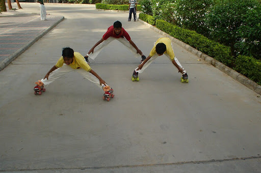
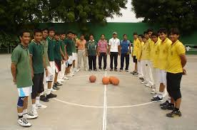
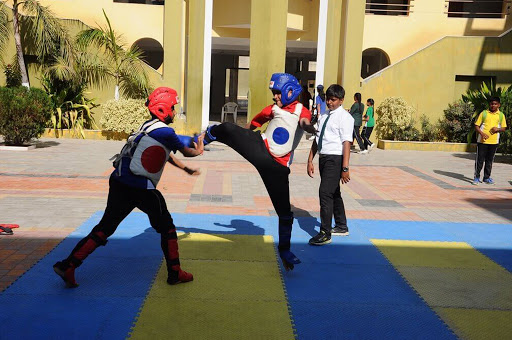
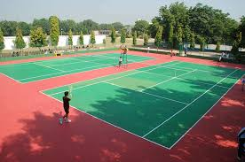

Sports day is a platform to show case the talent and efforts put in by the students. It not only helps us in staying physically fit but also rejuvenates us to meet other life challenges. In keeping with this tradition Primary and Secondary Wing hosted its Annual Sports Meet for the academic session 2018-19 on 24th and 25th January. Primary Wing On 24th January the Chief Guest for the event was Ms. Parul Dalsukhbhai Parmar who is an Indian para-badminton player from Gujarat. She is a former World no.1 in women’s singles para-badminton and has been bestowed with Arjuna and Eklavya awards amongst others. The event was also graced by the Guest of honour Mr. Djoko S who is a renowned Indonesian badminton coach and special guest Mr Gautam J. Jadhav who is a black belt and 4th DAN in Kukkiwon World Taekwondo. The highlights of the day were: unveiling of the mascot ‘Lion’, oath taking ceremony, a walk past by the students of the Primary Wing ,dumbbell drill by the students of standard I and II, Zumba dance by the students of standard III and IV and western dance by standard V students.On 25th January the programme commenced with the welcome of the Chief guests Dr. B.D. Vanar, Director of Department of Physical Education, Gujarat University, Senior Joint Secretary of Athletic Federation of India and Vice President of Gujarat State Volleyball Association. The occasion was also graced by the presence of Director Rani Chaudhary, Principal Mr. Atanu Rath, Headmistress of Secondary Wing Ms. Manju Dabi and Headmaster of Primary Wing Mr. Rakesh Bhagat. The day started off with the lovely rendition by the NCC Cadets showcasing the march past followed by the four houses each led by their respective house captains. The opening ceremony began with declaration of Sports Meet open by releasing of balloons and lighting the torch. The students entered into the spirit of the occasion in a grand way with the oath which was administered by the chief guest further followed by the unveiling of the event mascot - ‘Lion’. An energizing bamboo drill, saree drill and hoop drill won the heart of audience and filled the event with vibrant colours. The young achievers who had brought laurels to the school in the zonal, state, national and International levels were felicitated with the medals and trophies by the chief guest. Chief guest Dr. B.D Vanar in his address congratulated those shining stars and praised DPSG family for the meticulous planning and execution of the event. He also applauded the visionary element of the school for nurturing and developing student’s potential in the field of sports. Once the races began; the air was filled with excitement and cheer for the young athletes. The competitiveness among the students soared through the roof. Students of primary and secondary wing competed in various events and exhibited their sportsmanship. Sports day was filled with sportsmanship, enthusiasm and memories to cherish. The event concluded with the distribution of medals, trophies and certificates.
   